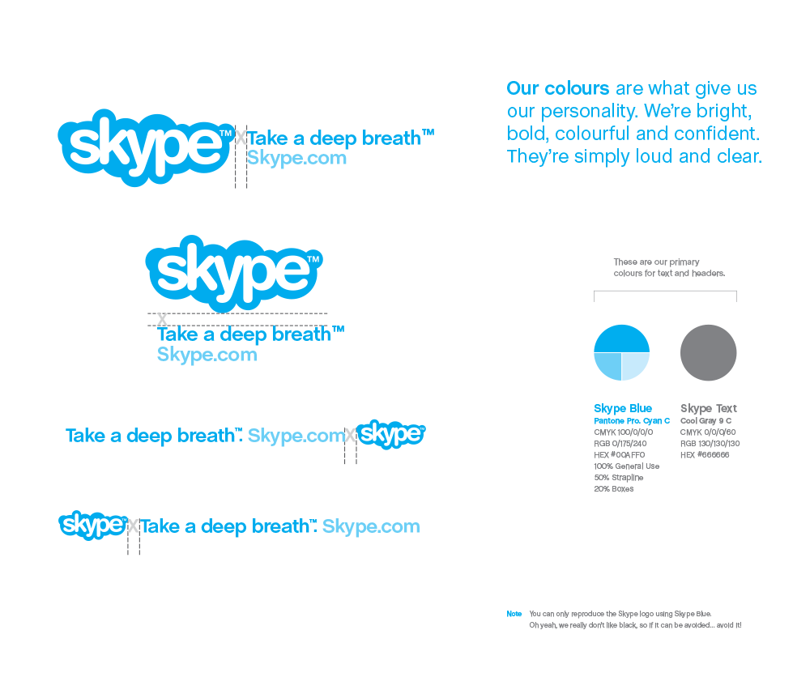
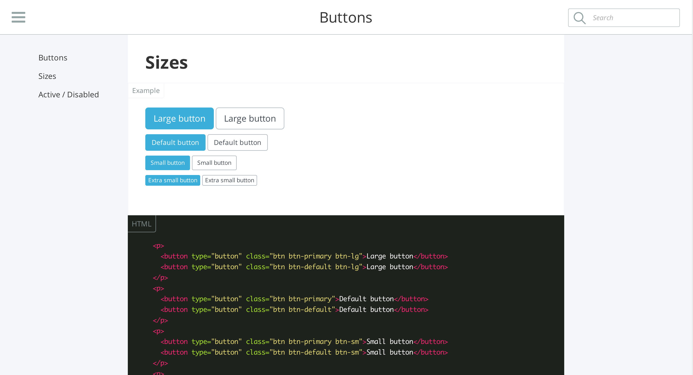

Hi !
My name is Yann and
I'm Frontend developer @Antistatique.
o_O
Roadmap :
- Introduction
- The concept
- Design process
- Dynamic Styleguide
- Frameworks
- Conclusion
Atomic design
Similarly, interfaces are made up of smaller components. This means we can break entire interfaces down into fundamental building blocks and work up from there. That’s the basic gist of atomic design.
Brad Frost, Atomic Design
There are five distinct levels in atomic design :
- Atom
- Molecule
- Organism
- Template
- Page

Atoms
Atoms are the basic building blocks of matter. Applied to web interfaces, atoms are our HTML tags, such as a form label, an input or a button.


Molecules
Molecules are groups of atoms bonded together and are the smallest fundamental units of a compound. These molecules take on their own properties and serve as the backbone of our design systems.
Organisms
Molecules give us some building blocks to work with, and we can now combine them together to form organisms. Organisms are groups of molecules joined together to form a relatively complex, distinct section of an interface.
Templates
Templates consist mostly of groups of organisms stitched together to form pages. It’s here where we start to see the design coming together and start seeing things like layout in action.

Pages
Pages are specific instances of templates. Here, placeholder content is replaced with real representative content to give an accurate depiction of what a user will ultimately see.

After :
- Page design
- Page design
- Validation
- dev
Now :
- Element design
- Page example
- Validation
- dev
&
- Element design
- Page example
- Validation
- dev
From design to development
Web development is Object Oriented by default, so if design become so, the world will be a better place. To do that we have to use styleguide !
Old-fashioned
Modern way

Dynamic styleguide
Generate front-end documentation directly from code.
- Easy to maintain
- Easy to use
- Better collaboration
/*doc
---
title: Buttons
name: a-buttons
category: Layout - Buttons
---
```html_example
```
*/
.btn {
display: inline-block;
margin-bottom: 0; // For input.btn
font-weight: $btn-font-weight;
text-align: center;
vertical-align: middle;
// ...
}
A structure for supporting or enclosing something else, especially a skeletal support used as the basis for something being constructed.
The American Heritage® Dictionary of the English Language, Fourth Edition copyright ©2000 by Houghton Mifflin Company